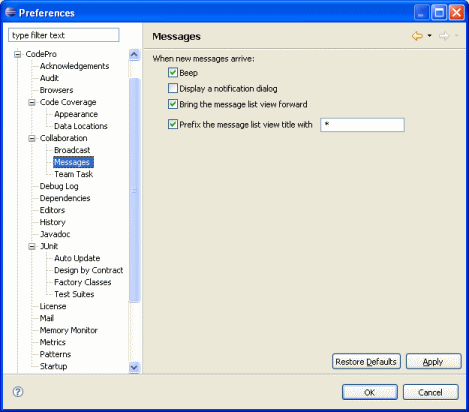

Preferences - Messages This page is used to control message-related options. When new messages arriveThese options specify how the arrival of new messages is signaled with a single beep, with a dialog, by bringing the message list view to the front, and/or by changing the title on the message list view. |